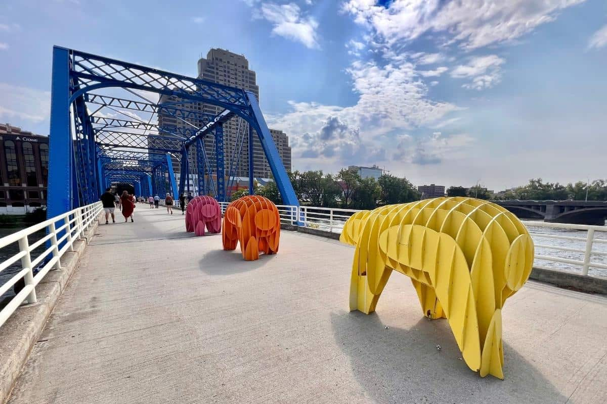
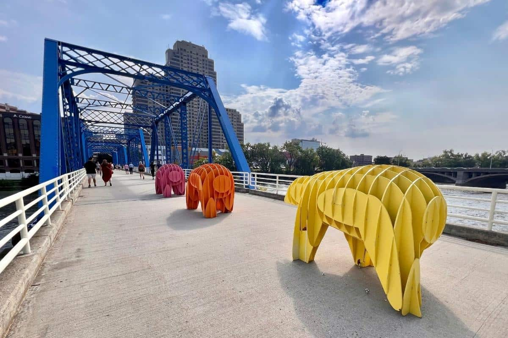
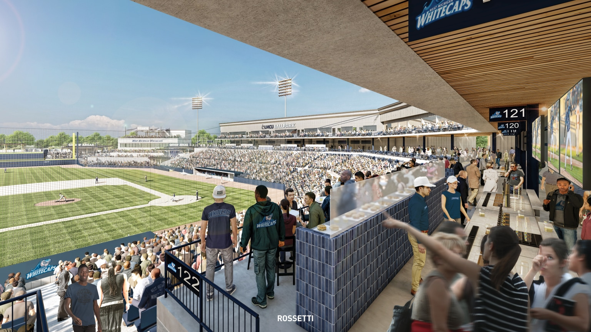
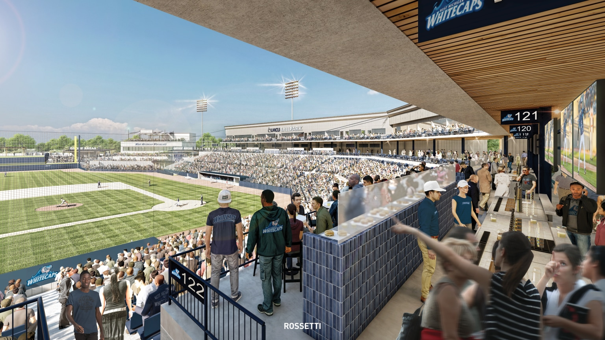

Catch a Whitecaps Game at LMCU Ballpark
4500 W River Dr NE
Comstock Park, MI 49321
Welcome to the vibrant sports scene in Grand Rapids! If you're a fan of baseball, you won't want to miss the excitement at the LMCU Ballpark, home to the Whitecaps, the local minor league team. The LMCU Ballpark provides an intimate and lively setting for an unforgettable baseball experience.
As you settle into your seat, surrounded by the cheers of fellow fans, get ready for a fantastic game. The Whitecaps always deliver thrilling performances that keep the crowd on the edge of their seats. Whether you're a baseball enthusiast or just looking for a fun night out, the atmosphere at the ballpark is sure to captivate you.
And what's a baseball game without classic stadium treats? Indulge in the timeless combination of popcorn and hotdogs, savor the sweetness...
of Dip n' Dots, and explore a variety of other delightful snacks. The concession stands offer a culinary journey that adds to the overall enjoyment of the game.
But the excitement doesn't end with the last pitch! Plan your visit to coincide with one of the nights featuring post-game fireworks. As the sun sets and the stars emerge, the sky above the LMCU Ballpark transforms into a dazzling canvas. The fireworks display is a breathtaking spectacle, casting a colorful glow over the field and creating memories that will last a lifetime.
So, gather your friends and family, don your favorite team colors, and head to the LMCU Ballpark for a memorable evening of baseball, camaraderie, and spectacular fireworks. The Whitecaps await, ready to provide an entertainment-filled experience that captures the spirit of Grand Rapids. Don't miss out on the fun – it's a Grand Rapids tradition!
 


Visit Frederik Meijer Gardens to See the Butterflies
1000 E Beltline Ave NE
Grand Rapids, MI 49525
The air comes alive with a symphony of colors as the newborn butterflies stretch their wings for the very first time. Brilliant hues of orange, blue, and yellow dance through the air, creating a living masterpiece that encapsulates the beauty of spring. Capture the moment with your camera or simply bask in the wonder of this natural spectacle.
Your journey begins as you marvel at the intricate chrysalises suspended from branches, each one holding the secret of a butterfly about to unfold. Patiently await the magical moment when these ethereal creatures break free from their cocooned slumber and take their inaugural flight into the world.
Step into the enchanting world...
of butterflies as spring unfolds its delicate wings There's a magical place where nature comes alive, and you can witness the breathtaking spectacle of new life emerging in a kaleidoscope of colors. Welcome to the butterfly haven, where the air is filled with the gentle fluttering of delicate wings and the promise of transformation.
As the days grow warmer and the first blooms of spring grace the landscape, visit the butterfly sanctuary to witness a remarkable phenomenon – the hatching of new butterflies. Step inside the serene enclosure, where vibrant flowers sway in the breeze and the air is perfumed with the sweet fragrance of nectar.
So, gather your friends and family, don your favorite team colors, and head to the LMCU Ballpark for a memorable evening of baseball, camaraderie, and spectacular fireworks. The Whitecaps await, ready to provide an entertainment-filled experience that captures the spirit of Grand Rapids. Don't miss out on the fun – it's a Grand Rapids tradition!

Visit the Grand Rapids Public Museum Planetarium
272 Pearl St NW
Grand Rapids, MI 49504
Upon entering, you're enveloped in a dome of darkness that gradually transforms into a canvas of stars. The state-of-the-art planetarium technology recreates the vastness of space, allowing you to explore the mysteries of the universe in a way that feels both intimate and expansive.
The planetarium serves as a portal to the cosmos, offering educational and entertaining shows that cater to audiences of all ages. Whether you're an astronomy enthusiast or a curious novice, the visual storytelling within the domed theater brings to life the wonders of distant galaxies, planets, and cosmic phenomena.
Expertly narrated presentations guide you through constellations, ...
nebulae, and the mesmerizing dance of celestial bodies. Witness the birth of stars, travel to far-off galaxies, and marvel at the beauty of our own Milky Way as it unfolds above you. The combination of cutting-edge visuals and a surround-sound experience creates a multisensory adventure that leaves an indelible mark on your imagination.
Our planetarium is not just a space for learning; it's a hub for inspiration and a gateway to understanding the vastness of the cosmos. Educational programs cater to students, providing a dynamic platform to explore topics ranging from astronomy and astrophysics to space exploration.
In addition to regular shows, the planetarium often hosts special events such as stargazing nights, where enthusiasts can observe celestial wonders through telescopes and engage with experts in the field. It's a unique opportunity to connect with the night sky in a way that transcends traditional stargazing.

Visit John Ball Zoo
1300 Fulton St W
Grand Rapids, MI 49504
As you step through the gates, you're greeted by the harmonious sounds of nature and the excited chatter of visitors. The zoo unfolds before you, revealing habitats carefully designed to mirror the diverse ecosystems that animals call home. From the towering trees of the rainforest to the arid deserts, each section of the zoo offers a unique and immersive experience.
Wander through the various exhibits, where you'll encounter a menagerie of creatures—from majestic big cats prowling in simulated wilderness to playful primates swinging through the trees. Educational signage provides fascinating insights into the lives of these incredible beings, fostering a deeper understanding and appreciation for the importance of wildlife conservation.
For the little ones, our petting zoo is a hands-on adventure, allowing...
them to interact with gentle farm animals under the watchful eye of our caring staff. It's an opportunity for children to forge a connection with the animal kingdom and learn about the importance of empathy and compassion.
The zoo isn't just a place to observe; it's a hub of education and conservation efforts. Engage with our dedicated team of educators during live animal presentations, where you can get up close and personal with fascinating creatures while learning about their behaviors, habitats, and the conservation initiatives in place to protect their species.
As you explore, take a break at one of our charming cafés or picnic areas scattered throughout the grounds. Recharge with delicious treats while enjoying picturesque views of the exhibits. The zoo experience extends beyond the animals, creating a perfect blend of entertainment, education, and relaxation.

Go Ice Skating at Rosa Parks Circle
135 Monroe Center St NW
Grand Rapids, MI 49503
When the temperatures drop, Rosa Parks Circle turns into a winter wonderland. Grab your skates and hit the ice! The park's central skating rink becomes a lively gathering spot for both beginners and seasoned skaters. Gliding beneath the twinkling lights, surrounded by the city's skyline, is a magical experience that captures the essence of winter in Grand Rapids.
As the weather warms up, Rosa Parks Circle shifts into concert mode. The stage comes alive with the sounds of local bands, diverse musical genres, and the buzz of a lively crowd. From indie vibes to jazz tunes, the park becomes a melting pot of musical styles. Just kick back on the grass, soak in the tunes, and let the music fill the urban air.
When the sun sets, it's time to put on your dancing shoes! Rosa...
Parks Circle hosts swing dancing nights that bring the community together for a toe-tapping, twirl-inducing good time. Whether you're a seasoned dancer or just looking to bust a move, the open-air dance floor welcomes all. The lively atmosphere and city lights create the perfect backdrop for a night of rhythmic fun.
No matter the season, Rosa Parks Circle is a chill spot for relaxation and people-watching. Grab a seat on the steps, sip on your favorite coffee from a nearby café, and soak in the urban vibes. The central location makes it a hub for locals and visitors alike, offering a perfect blend of city life and outdoor leisure.
So, whether you're carving figure eights on the ice, swaying to the beat of a live concert, or swinging under the stars, Rosa Parks Circle is the downtown rendezvous where the city's pulse and the rhythm of life meet in perfect harmony. Come for the activities, stay for the vibe – it's the heartbeat of downtown Grand Rapids.
Watch a concert at Van Andel Arena
130 Fulton St W
Grand Rapids, MI 49503
This multi-purpose venue isn't just a place; it's a dynamic space where the thrill of live sports meets the magic of unforgettable concerts. When the arena gears up for basketball, the energy is electrifying. The squeak of sneakers on the court, the cheers from the crowd, and the intense competition – it all comes together for an adrenaline-packed experience. Whether you're a die-hard fan or just there for the excitement, catching a basketball game at Van Andel Arena is a slam dunk.
Transforming from a basketball court to a hockey rink, the arena becomes a battleground for fierce puck battles and exhilarating goals. The atmosphere is intense, the fans are passionate, and the cold air hums with the excitement of every slapshot. A hockey night at Van Andel Arena is an experience that'll leave you on the edge of your seat.
But Van Andel Arena isn't just about sports; it's also a stage for some of the biggest names in the music industry. When the lights dim and the crowd roars, you know you're in for an epic night. From rock legends to chart-topping pop stars, the arena hosts concerts that resonate with the diverse musical tastes of Grand Rapids.
No matter what brings you to Van Andel Arena, you're guaranteed moments that linger in your memory. It's the roar of the crowd when the home team scores, the crescendo of a live guitar solo, and the collective joy of a community coming together for shared experiences.
The arena isn't just about the main event; it's about the entire experience. Local food vendors bring a taste of Grand Rapids to the concourses, and the camaraderie among fans adds an extra layer of excitement. It's more than a venue; it's a community hub where everyone, from sports enthusiasts to music lovers, finds a home.
Visit Robinette's Apple Orchard
3142 4 Mile Rd NE
Grand Rapids Charter Township, MI 49525
Nestled in the picturesque countryside of Grand Rapids, Robinette's Orchard is more than just an apple-picking destination; it's a wholesome, family-friendly experience that captures the essence of autumn.
From the moment you set foot on the grounds, you're greeted by the sight of sprawling apple orchards, each tree laden with the rich hues of ripe fruit. The orchard offers a variety of apple-picking options, allowing visitors to fill their baskets with crisp, freshly picked apples straight from the tree. The air is infused with the sweet scent of apples, creating a sensory experience that signals the arrival of fall.
While apples take center stage, Robinette's Orchard is a cornucopia of agricultural delights. Traverse the orchard lanes to discover a bounty of pumpkins, gourds, and other seasonal produce, creating a patchwork of colors that mirrors the autumn landscape. The charm extends beyond the trees, inviting visitors to explore the vibrant tapestry of the orchard.
Families with children will find an array of activities to keep the little ones entertained. A charming hayride offers a scenic tour of the orchard, providing a relaxing way to absorb the beauty of the fall foliage. The orchard also features a delightful petting zoo, where friendly animals captivate the hearts of young visitors.
No trip to Robinette's Orchard is complete without a visit to the country store, where the aroma of fresh-baked goods beckons. Indulge in mouthwatering apple cider donuts, sip on warm apple cider, and explore shelves filled with locally made jams, jellies, and other artisanal treats. The store is a treasure trove of flavors that encapsulate the essence of the orchard.

See Beautiful Artworks at the Annual ArtPrize
Grand Rapids, MI
Visit WebsiteArtPrize, the annual art extravaganza in Grand Rapids, transforms the city into a vibrant canvas where creativity knows no bounds. Picture this – the streets of Grand Rapids bursting with life as art installations, sculptures, and interactive exhibits pop up at every corner. ArtPrize turns the entire city into an urban art gallery, where creativity spills onto sidewalks, parks, and unexpected nooks, creating a dynamic and ever-changing masterpiece.
One of the most exciting aspects of ArtPrize is the incredible diversity of artistic expressions. From avant-garde sculptures to thought-provoking paintings and cutting-edge multimedia installations, the event showcases the full spectrum of artistic ingenuity. It's a celebration of creativity that transcends traditional boundaries and challenges conventional notions of art.
ArtPrize is not just for art enthusiasts; it's an interactive experience for everyone. Visitors are encouraged to engage with the art, offering a unique opportunity to connect with creators and gain insight into the inspiration behind each piece. The dialogue between artists and the public adds an enriching layer to the overall experience.
As the name suggests, ArtPrize is not your typical art competition. The event awards significant cash prizes, but it's the public that holds the power to vote for their favorite artworks. This democratic approach ensures that the people's voice shapes the narrative of the event, fostering a sense of community involvement and empowerment.
During ArtPrize, the city buzzes with a festive atmosphere. Outdoor performances, live music, and spontaneous art happenings contribute to the lively ambiance. Local businesses often join the celebration, incorporating art into their storefronts, making the entire city a playground for artistic exploration.